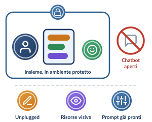

A · Scuola primaria · 6–11 anni (minori di 14 anni)Il compito a casa con l’IA si adatta all’età, alla maturità cognitiva e al profilo giuridico degli studenti.

Mai da soli su un chatbot aperto: si esplora insieme, in famiglia
L. 132/2025, art. 4, c. 4
Consenso dei genitori
Obbligo di consenso espresso di chi esercita la responsabilità genitoriale, per qualsiasi strumento di IA.
Configurazione didattica
Nessun compito in autonomia
Nessuna assegnazione autonoma di compiti a casa su chatbot aperti o commerciali.
Modalità operativa
Esplorazioni guidate in famiglia
Solo su piattaforme protette d’istituto, ad esempio:
- attività unplugged;
- fruizione di risorse visive;
- simulatori interattivi con prompt pre-impostati dal docente.
Obiettivo
La macchina può sbagliare
Far comprendere all’alunno che l’IA è un assistente che può commettere errori e che richiede sempre la presenza dell’uomo.